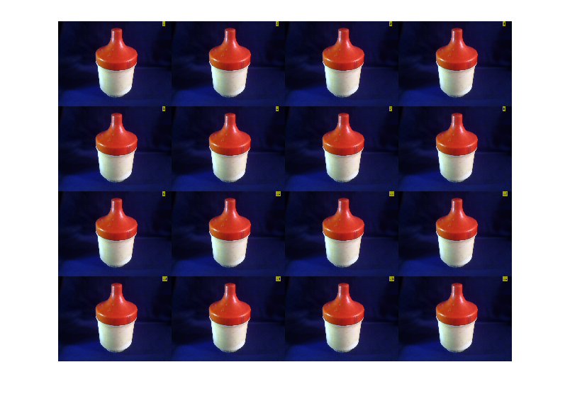
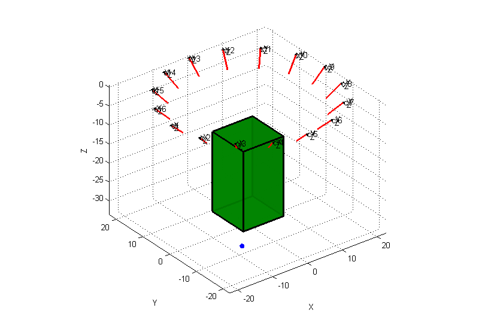
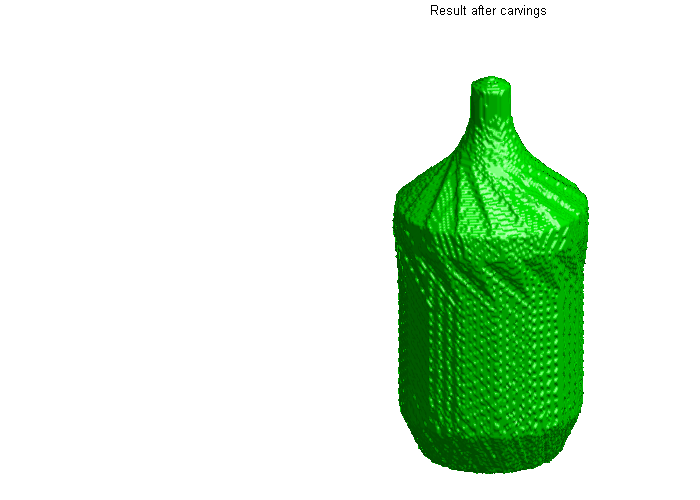
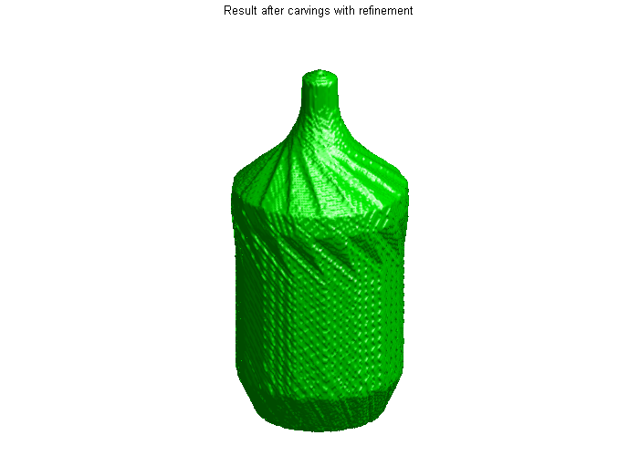
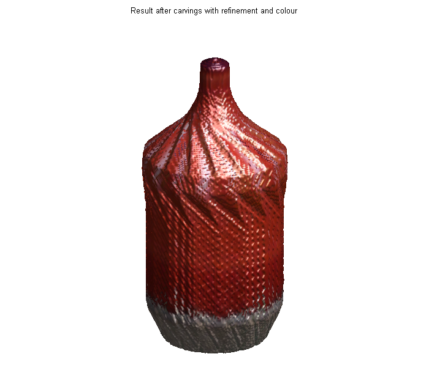

Contents
- Intro...
- get the images or simulate one...
- calculate the camera matrises and give the dimenssion (assumed fixed)
- Convert the Images into Silhouettes
- Work out the space occupied by the scene
- Create a Voxel Array
- Now Start the active Carving
- Get real values
- Plot point-cloud
- Final Result
- Rotate automatic around the object
- The End..
function [ voxels ] = main3dscanner(mode)
% main3dscanner a script to deal and process 3dscanner data % Copyright : [YY] 2015 % mechatronics Hims /Syria.
Intro...
هذا الملف يحتوي على آليات إعادة البناء من الصور المأخوذة لجسم على طاولة دوارة وحيث أن الاحداثيات معلومة سلفاً فيمكن حساب المصفوفات اللازمة بدقة ثم عبر خوارزمية " الشكل من الاطارات " يمكن اسقاط النقاط الافتراضية والنحت لكل الصور وما تبقى ينتمي حكماً للجسم , تزيد الدقة طبعاً بزيادة الصور وبزيادة كثافة النقاط , ولكن هذا يتطلب ذاكرة
close all import spacecarving.*; % prase inputs if nargin<1 mode=1; % slow elseif strcmp(mode,'slow') mode=1; elseif strcmp(mode,'fast') mode=0; else error('your input 4 cals mode invalid:please choose ,fast or slow .') end
get the images or simulate one...
[ im5 ] = simaqmec( ); %[im5 ,time]=fpropose3(48,2,2.99); % 4D array of images. for y = 1:size(im5,4) im5(:,:,:,y) = insertText(im5(:,:,:,y), [0.92*size(im5,2) 0], y,'FontSize', 18); end % care here cause the segmentation could be affected. % however you could commit it away. figure; montage(im5)
Warning: Image is too big to fit on screen; displaying at 25%
calculate the camera matrises and give the dimenssion (assumed fixed)
for the can:r=28
%th2=38.15; % in degree %for jar1 r=25,z=21,th2=40. % th2=35; th2=44; % r=37.5; r=22; % in cientemeter % put wherever the matrix are.... s=load('K4cam.mat'); camobject=s.k4lapcam ;%k4lapcam; [ cams ] = generatec43d( im5,th2,r,camobject );
Convert the Images into Silhouettes
% figure; % imshow(cams(1).Image); % h=imrect; % p = wait(h); % p=ceil(p); % p=roipoly(cams(1).Image); % close(gcf) figure; for c=1:numel(cams) cams(c).Silhouette = createMasksalt1( cams(c).Image );%segment3( cams(c).Image,p ); imshow(cams(c).Silhouette) drawnow end close(gcf) % makeFullAxes( gcf );
Work out the space occupied by the scene
Initially we have no idea where to look for the model. We will assume that the model lies in the space spanned by the cameras and their principal view directions. We then perform a very low-res space-carve using all the cameras to narrow down exactly where the object is. This isn't foolproof, but good enough for this demo.
z=25.5; [xlim,ylim,zlim] = findmodel3( cams );
save here
Create a Voxel Array
This creates a regular 3D grid of elements ready for carving away. The input arguments set the bounding box and the approximate number of voxels to create. Since the voxels must be cubes, the actual number generated may be a little more or less. We'll start with about six million voxels (you may need to reduce this if you don't have enough memory).
For "real world" implementations of space carving you certainly wouldn't create a uniform 3D matrix like this. OctTrees and other refinement representations give much better efficiency, both in memory and computational time.
voxels = makevoxels( xlim, ylim, zlim, 3000000 );% here it was 6000000 [YY]. starting_volume = numel( voxels.XData ); % Show the whole scene disp('If u prefer to use the gui mannully u can do it here ') keyboard figure('color',[1 1 1],'Position',[100 100 800 550]); showscene2(cams) hold on p=[0 1 0]; x=xlim(1);y=ylim(1);z=zlim(1); vx=diff(xlim);vy=diff(ylim);vz=diff(zlim); scatter3(x-(vx/8),y-(vy/8),z-(vz/8),50,[0 0 1],'fill') ver=[x y z;x+vx y z;x+vx y z+vz;x y z+vz;x y+vy z+vz;x y+vy z;x+vx y+vy z;x+vx y+vy z+vz]; face=[1 2 3 4;1 4 5 6;1 2 7 6;2 7 8 3;6 7 8 5;5 4 3 8]; patch('Vertices',ver,'Faces',face,'CData',p,'Facecolor',p,... 'FaceAlpha',0.9,'LineWidth',2); axis equal;axis vis3d clear x y z vx vy vz %showscene2( cams, voxels ); drawnow()
If u prefer to use the gui mannully u can do it here
principal point not specified, setting it to centre of image plane
-0.667183642295244
-0.303680767976939
0.680179372382454
principal point not specified, setting it to centre of image plane
delete camera object
-0.500183712910226
-0.535884572202589
0.680179372382454
principal point not specified, setting it to centre of image plane
delete camera object
-0.257035347411275
-0.686504808116139
0.680179372382454
principal point not specified, setting it to centre of image plane
delete camera object
0.0252443196998166
-0.732610910175589
0.680179372382454
principal point not specified, setting it to centre of image plane
delete camera object
0.303680767976939
-0.667183642295244
0.680179372382454
principal point not specified, setting it to centre of image plane
delete camera object
0.535884572202589
-0.500183712910226
0.680179372382454
principal point not specified, setting it to centre of image plane
delete camera object
0.686504808116139
-0.257035347411275
0.680179372382454
principal point not specified, setting it to centre of image plane
delete camera object
0.732610910175589
0.0252443196998166
0.680179372382454
principal point not specified, setting it to centre of image plane
delete camera object
0.667183642295244
0.303680767976938
0.680179372382454
principal point not specified, setting it to centre of image plane
delete camera object
0.500183712910226
0.535884572202589
0.680179372382454
principal point not specified, setting it to centre of image plane
delete camera object
0.257035347411274
0.686504808116139
0.680179372382454
principal point not specified, setting it to centre of image plane
delete camera object
-0.0252443196998165
0.732610910175589
0.680179372382454
principal point not specified, setting it to centre of image plane
delete camera object
-0.303680767976939
0.667183642295244
0.680179372382454
principal point not specified, setting it to centre of image plane
delete camera object
-0.535884572202589
0.500183712910226
0.680179372382454
principal point not specified, setting it to centre of image plane
delete camera object
-0.686504808116139
0.257035347411275
0.680179372382454
principal point not specified, setting it to centre of image plane
delete camera object
delete camera object
 Now Start the active Carving
In this case we have 36 views (roughly every 10 degrees). For a very detailed model and if you have an automatic capture rig you would use far more - the only limit being time and disk-space. When using a computer controlled turn-table (as is done in museums) storage is the only real limitation.
Waitingpro if mode==0 % fast processing.. nod=1/(numel(cams)+1); for ii=1:numel(cams) voxels = carve2( voxels, cams(ii) ); splsc.ProgressRatio=splsc.ProgressRatio+nod; % add to progress bar.. end figure('Position',[100 100 700 500]); showsurface(voxels) set(gca,'Position',[0 0 1.4 0.95]) axis off title( 'Result after carvings' ) final_volume = numel( voxels.XData ); fprintf( 'Final volume is %d (%1.2f%%)\n', ... final_volume, 100 * final_volume / starting_volume ) % drawnow() elseif mode==1
% slow processing. nod=1/(numel(cams)*2+1); for ii=1:numel(cams) voxels = carve2( voxels, cams(ii) ); splsc.ProgressRatio=splsc.ProgressRatio+nod; % add to progress bar.. end figure('Position',[100 100 700 500]); showsurface(voxels) set(gca,'Position',[0 0 1.4 0.95]) axis off title( 'Result after carvings' ) final_volume = numel( voxels.XData ); fprintf( 'Final volume is %d (%1.2f%%)\n', ... final_volume, 100 * final_volume / starting_volume ) drawnow()
ans =
760.00048828125
Final volume is 1097758 (36.06%)
 Get real values
We ideally want much higher resolution, but would run out of memory. Instead we can use a trick and assign real values to each voxel instead of a binary value. We do this by moving all voxels a third of a square in each direction then seeing if they get carved off. The ratio of carved to non-carved for each voxel gives its score (which is roughly equivalent to estimating how much of the voxel is inside).
offset_vec = 1/3 * voxels.Resolution * [-1 0 1]; [off_x, off_y, off_z] = meshgrid( offset_vec, offset_vec, offset_vec ); num_voxels = numel( voxels.Value ); num_offsets = numel( off_x ); scores = zeros( num_voxels, 1 ); for jj=1:num_offsets keep = true( num_voxels, 1 ); myvoxels = voxels; myvoxels.XData = voxels.XData + off_x(jj); myvoxels.YData = voxels.YData + off_y(jj); myvoxels.ZData = voxels.ZData + off_z(jj); for ii=1:numel( cams ) [~,mykeep] = carve2( myvoxels, cams(ii) ); keep(setdiff( 1:num_voxels, mykeep )) = false; splsc.ProgressRatio=splsc.ProgressRatio+... (nod/num_offsets); % add to progress bar.. end scores(keep) = scores(keep) + 1; end voxels.Value = scores / num_offsets; figure('Position',[100 100 700 500]); showsurface( voxels ); set(gca,'Position',[-0.2 0 1.4 0.95]) axis off title( 'Result after carvings with refinement' )
end
Plot point-cloud
% hf=figure('Position',[100 100 700 500]); % hax=axes('Parent',hf); hold on; grid on; % scatter3(voxels.XData,voxels.YData,voxels.ZData,1,[1 0 0],'fill') % % xlabel('x-axis (mm)');ylabel('y-axis (mm)');zlabel('z-axis (mm)') % view(3);axis equal; % set(hax,'XAxisLocation','top','YAxisLocation','left',... % 'Ydir','reverse') % grid on % title('Reconstructed Point Cloud');
Final Result
For online galleries and the like we would colour each voxel from the image with the best view (i.e. nearest normal vector), leading to a colour 3D model. This makes zero difference to the volume estimate (which was the main purpose of the demo), but does look pretty!
h=figure('color',[1 1 1],... 'NumberTitle','off','name','FResult','Position',[300 65 700 610]); ptch = showsurface( voxels ); colorsurface( ptch, cams ); set(gca,'Position',[-0.2 0 1.4 0.95]) axis off title( 'Result after carvings with refinement and colour' ) rotate3d on
Rotate automatic around the object
for g=zlim(1):0.01:0 x=cos(g*6); y=sin(g*6); view([x,y,g]) pause(0.016) end
The End..
By : yasin yousif & his friends.. Supervisor: Dr Yasser Khadra. Mechatronics 2015.... grad project.
end
ans =
Resolution: 0.09785512
XData: [1097758x1 single]
YData: [1097758x1 single]
ZData: [1097758x1 single]
Value: [1097758x1 double]